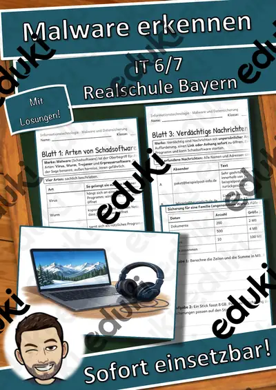

Lesespur: Phishing und Betrug im Netz erkennen – Lesespurgeschichte mit Rätseln (Klasse 9)
Phishing und Betrug im Netz erkennen – Lesespurgeschichte Informatik (Klasse 9)Schick deine Klasse auf eine Lesespur durch eine Mitmach-Ausstellung der Polizei! Hannah und Yusuf aus der 9a besuchen die Ausstellung „Vorsicht, Köder!“ im Bürgerhaus. Ein Kriminalhauptkommissar zeigt ihnen, mit welchen Tricks Betrüger im Internet an Daten und Geld kommen: Am Empfang erfahren sie, was Phishing ist, an der Postfachwand entlarven sie die typischen Tricks einer Betrugsmail und an der Absenderlupe gefälschte Absender. Am Linkprüfstand lernen sie, Links vor dem Klicken zu prüfen, in der Handyecke und der Telefonzelle begegnen ihnen Betrug per SMS und am Telefon, am Glücksrad falsche Gewinnspiele und an der Shoptheke falsche Online-Shops. An der Schutzwand sammeln sie wirksame Schutzmaßnahmen, und an der Beratungstheke erfahren sie, was im Notfall zu tun ist. Yusufs Plüsch-Rettungsring Bojo ist immer dabei. Am Ende jedes Abschnitts verrät ein Hinweis den nächsten Ort auf dem Plan – nur wer genau liest, findet den Weg und sammelt alle geheimen Buchstaben zum Lösungswort.
Die perfekte Lesespur für INFORMATIK in der 9. Klasse – ideal für die Medienbildung, Datensicherheit, Vertretungsstunden, Projekttage und fächerübergreifend mit Deutsch, Mathematik und Sozialkunde: Sie verbindet sinnentnehmendes Lesen mit praktischen Regeln zum Schutz vor Betrug im Netz und kleinen Prozentrechnungen. Das Material ist SOFORT EINSETZBAR, funktioniert ganz ohne Computer und ist in DREI DIFFERENZIERUNGSSTUFEN (leicht ★ / mittel ★★ / schwer ★★★) angelegt.WICHTIG: Das komplette Material ist sowohl in FARBE als auch in SCHWARZ-WEISS enthalten – ideal zum Sparen von Druckkosten.DAS IST ENTHALTEN
- Lesespurgeschichte in 3 Niveaus (leicht, mittel, schwer)
- farbiger Plan der Ausstellung als Suchkarte
- Hörverstehen mit QR-Code zur MP3 (selbstständiges Hören mit Kopfhörern)
- vier Aufträge auf dem Weg: eine Zuordnung, ein Quiz, eine Rechenaufgabe und ein Steckbrief
- Rätselseite (Wörter-Suchsel + Fragen zu Phishing und Betrug im Netz)
- Ausmalbild zum Thema
- ausführliches Lösungsblatt für die Lehrkraft
- alles zusätzlich als komplette Schwarz-Weiß-VarianteSO GEHT DIE LESESPURDie Jugendlichen lesen ab START, finden im Text den nächsten Ort, suchen ihn auf dem Plan und lesen bei dieser Station weiter. An jeder richtigen Station gibt es einen Buchstaben. Eingeplante Sackgassen (Kaffeeautomat, Bücherregal, Treppe, Garderobe) sind keine Stationen und dienen der Selbstkontrolle. Am Ende werden die gesammelten Buchstaben umgestellt und ergeben ein geheimes Lösungswort. (Die Lösungen sind selbstverständlich nur im Lösungsblatt für die Lehrkraft enthalten.)INHALTLICHER SCHWERPUNKTPhishing und Social Engineering, Merkmale von Betrugsmails (Zeitdruck, Drohung, unpersönliche Anrede, Datenabfrage), gefälschte Absender und ähnlich aussehende Adressen, Link-Ziele prüfen, Bedeutung des Schloss-Symbols, Betrug per SMS und Telefon, falsche Gewinnspiele, falsche Online-Shops, Schutzmaßnahmen (eigene Passwörter, Anmeldung in zwei Schritten, Updates, Spamfilter) und Notfallplan.ABGEDECKTER LEHRPLAN (Klasse 9, Informatik)
- Informatik (LehrplanPLUS Bayern) – Jahrgangsstufe 9: Datensicherheit und Datenschutz – Gefahren im Internet erkennen, Schutzmaßnahmen anwenden, verantwortungsvoll mit persönlichen Daten umgehen.
- Mathematik – Jahrgangsstufe 9: Sachrechnen, Prozentrechnung.
- Deutsch – Lesen: Sachtexte sinnentnehmend lesen; Zuhören: einem Hörtext folgen (Hörverstehen mit MP3).Geeignet für Freiarbeit, Stationenlernen, Vertretungsstunden, Wochenplan, Projekttage und Elternabende zur Medienbildung. Klassenstufe 9.
Ähnliche Materialien

Lesespur: Deepfakes: gefälschte Bilder und Videos erkennen – Lesespurgeschichte mit Rätseln (Klasse 10)

Lesespur: Meine Daten: was ich im Netz für mich behalte – Lesespurgeschichte mit Rätseln (Klasse 3)

Malware erkennen, Daten sichern – Arbeitsheft mit Lösungen (IT 6/7, Realschule Bayern)

Klug kaufen im Netz – Arbeitsheft mit Lösungen (WR 8, Realschule Bayern)

Lesespur: Doping: Betrug am Sport und am eigenen Körper – Lesespurgeschichte mit Rätseln (Klasse 10)

Belege im Betrieb: erkennen, prüfen und ordnen – Arbeitsheft mit Lösungen (BwR 7, Realschule Bayern)

Lesespur: Das Lebkuchenhaus: Quader, Netz und Oberfläche – Lesespurgeschichte mit Rätseln (Klasse 7)